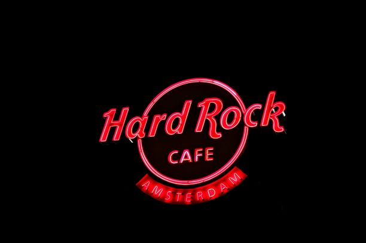

Clothing stores
4 Clothing Store
There are different chlothing stores at The Mall and 4 Chlothing Shop is one of them.Fashion is a form of self-expression and autonomy at a particular period and place and in a specific context, of clothing, footwear, lifestyle, accessories, makeup, hairstyle, and body posture.In its everyday use, the term implies a look defined by the fashion industry as that which is trending. Everything that is considered fashion is available and popular by the fashion system at 4 store.
The Stone Patch Company

The Stone Patch Company has been around for 20+ years and sells both shoes and chlothes.here are a wide variety of different types of shoes. Most types of shoes are designed for specific activities. For example, boots are typically designed for work or heavy outdoor use. Athletic shoes are designed for particular sports such as running, walking, or other sports. Some shoes are designed to be worn at more formal occasions, and others are designed for casual wear. There are also a wide variety of shoes designed for different types of dancing. Orthopedic shoes are special types of footwear designed for individuals with particular foot problems or special needs. Other animals, such as dogs and horses, may also wear special shoes to protect their feet as well.
The Marshall
The Marshall caters for all shoe, chlothes and accesories needs.Additionally, fashion has often dictated many design elements, such as whether shoes have very high heels or flat ones. Contemporary footwear varies widely in style, complexity and cost. Basic sandals may consist of only a thin sole and simple strap and be sold for a low cost. High fashion shoes made by famous designers may be made of expensive materials, use complex construction and sell for hundreds or even thousands of dollars a pair. Some shoes are designed for specific purposes, such as boots designed specifically for mountaineering or skiing, while others have more generalized usage such as sneakers which have transformed from a special purpose sport shoe into a general use shoe.
Supermarkets
YES Supermarket

There are different supermarkets at The Mall.YES supermarket typically has aisles for meat, fresh produce, dairy, and baked goods. Shelf space is also reserved for canned and packaged goods and for various non-food items such as kitchenware, household cleaners, pharmacy products and pet supplies. YES also sell other household products that are consumed regularly, such as alcohol, medicine, and clothing, and a much wider range of non-food products: DVDs, sporting equipment, board games, and seasonal items.
The Philadelphia Supermarket

The Philadelphia Supermarket has been around for 20+ years.A supermarket is a self-service shop offering a wide variety of food, beverages and household products, organized into sections. It is larger and has a wider selection than earlier grocery stores, but is smaller and more limited in the range of merchandise than a hypermarket or big-box market.Philadelphia is found in The Mall right at the last exit.
Electronic Stores
EXIT
There are different electronic shops at The Mall and EXIT is one of them.Electronics has had a major effect on the development of modern society. The identification of the electron in 1897, along with the subsequent invention of the vacuum tube which could amplify and rectify small electrical signals, inaugurated the field of electronics and the electron age.
IKEA

IKEA has been around for 20+ years.Selling electronics is fun,adding the newest and best technology to your store and watching customers scoop it up, thinking about what they’re going to accomplish with it, imagining their happy faces when they open the box — how can you not grin at that?
Restaurants
BURRITO
Burrito is a fine Mexican restaurant at The Mall.Seriously satisfying, the Burrito is a soft, warm tortilla wrapped to contain a number of juicy fillings including rice, beans and chicken, beef or pork. The name 'burrito' translates to ‘little donkey’ because the folded end of the tortilla looks like a donkey’s ear! Traditionally, Mexican burritos would include meat and refried beans, whilst in the US they introduced a combination of extra ingredients including rice, salsa, beans lettuce and meat.At Burrito our selection of recipes cover all meal times with the breakfast burrito, as well as a diverse selection of ingredients including dark chocolate.
MCDONALDS
Macdonalds has been around for 80+ years. McDonald's Corporation is an American fast food company, founded in 1940 as a restaurant operated by Richard and Maurice McDonald, in San Bernardino, California, United States. They rechristened their business as a hamburger stand, and later turned the company into a franchise, with the Golden Arches logo being introduced in 1953 at a location in Phoenix, Arizona.
HARDROCK CAFE

Hard Rock Cafe, Inc. is a chain of theme restaurants founded in 1971 by Isaac Tigrett and Peter Morton in London. In 1979, the cafe began covering its walls with rock and roll memorabilia, a tradition which expanded to others in the chain. In 2007, Hard Rock Cafe International (USA), Inc.